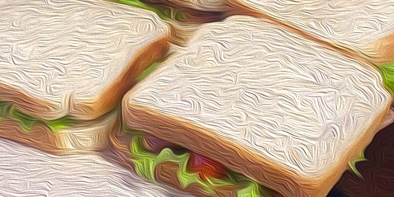

Barako Burgeriai

Aprašymas
Ar esi buves situacijoje kur neturi ką valgyti išskyrus tuos 20 kiaulienos kepsnių kur mama pakrove nes manė, kad studijuojant badauji?
Šis receptas tada kaip tik tau - Barako burgeriai.
Lengvai pagaminami, skanūs bei sotūs.... Ko lauki? Einam gamint!
Ingredientai
- Kiaulienos Kepsniai (Arba bet kokios kitos jūsu megiamos mėsos)
- Pomidorai
- Salota
- Batonas
- "Philadelphia" užtepėlė
Paruošimo būdas
- Pašildote kepsnius mikrobangėje
- Pasiemate dvi riekes batono ir jas užtepate "Philadelphia" užtepėle
- Susipjaustykite (Būtinai pirma nuplaukite) daržoves
- VIiska sudėkite ant batono ir uždenkite likusia batono rieke
Skanaus :)
Atgal į viršų
Grįžti į pradine svetaine